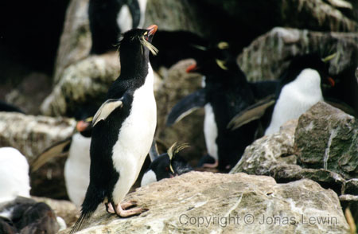
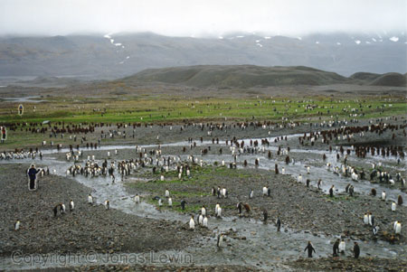
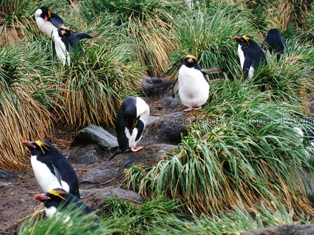
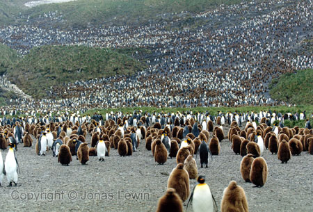
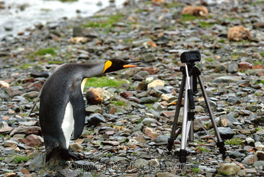
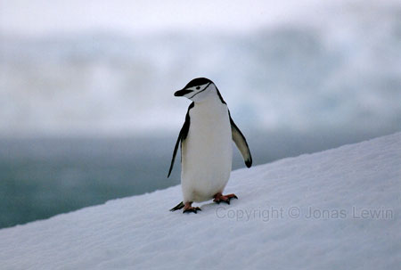
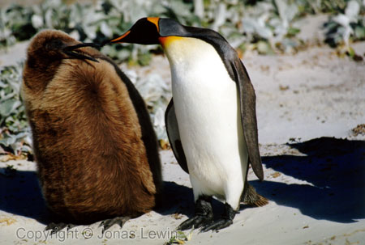
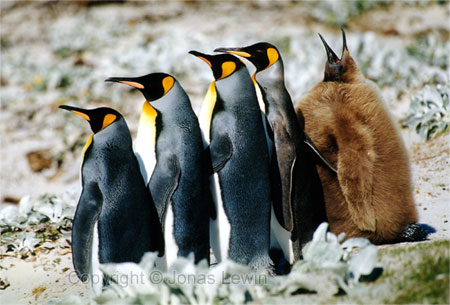
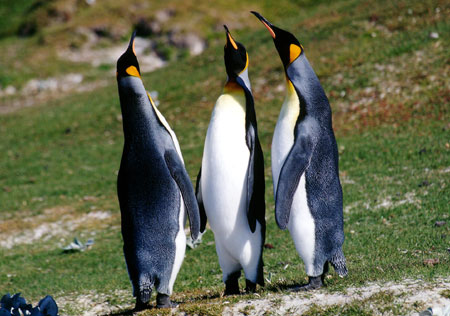

|
My lovely Penguins in Antarctica These penguins are expects in making noise, and the cacophony is heard long before you even see any of the penguins.
This was shot at the Falkland Islands (WestPoint Island). Seems like Penguins doesn't like solitude. Take a closer look at the picture, on the left side. I'm the person in blue. Thank you Anders for taking this photo at Fortuna Bay (South Georgia).
Penguins
on their way towards the ocean from their nests in Cooper Bay (South
Georgia). Not the best walkers, but excellent swimmers.
Did
I mention that I met a few friends here, in Fortuna Bay?
I'm
not really sure what this King Penguin is thinking about right now. I would
really like to know what is going through it's mind. It must have some
relation to my tripod.
This
Chinstrap Penguin is just as much an individual, just as you and I. Take a
moment to reflect the significance in that sentence. The most beautiful place on mother Earth. Saunders Island (Falkland Islands).
This chick really wants to be fed, but the grown King Penguin is not
interested in feeding it.

 If you want to see more Penguins, please visit the photography section on my homepage. |